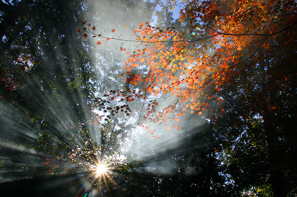
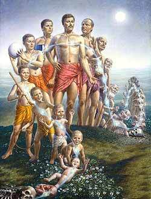
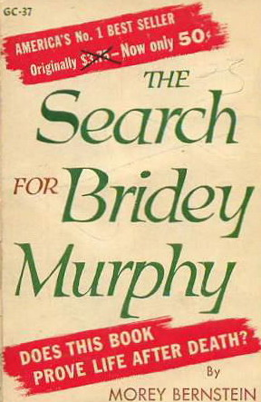
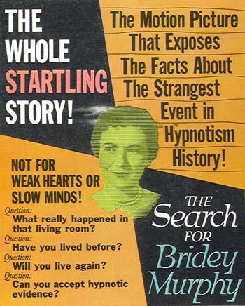
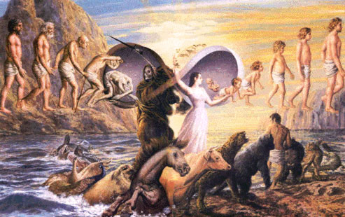
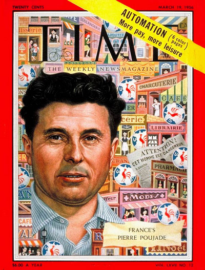

追溯前生
冯冯
去去来来. / .誊录
现在佛教的因果说，已经相当普遍地为西方知识份子所接受，再世与轮回之说，亦己成为异常热门的话题，不过由于接触佛教的思想程度各异，有些是直接，有些是间接，各人对于因果、再世、轮回等等的观念的接受与诠释也就各不相同，而且有些人把这些佛教的初步基本观念跟基督教的天堂、地狱、最后审判之说混为一谈，有些人认为是心理学上的一种自我催眠造成的强迫观念……讨论这些话题的著作，多得不可胜数，电视台上亦不时举行有关这一类话题的座谈会，不过他们都不是正面研究讨论佛教的思想，而是视之为一种思想哲学、心灵学、心理学、形而上学之类的Metaphysics座谈。
这一类座谈，深浅不一，视出席者的学识身份而别，有的渊博的学者，会把古今的哲学家的言论都拿出来，互相辨证，雄辩滔滔，令听者莫知所从。那些属于哲学范围，学术性质浓厚的辩论，根据加拿大电视的统计，收视率很高，较诸一般低极水准的娱乐节目，并不相遑。这可以说是一种可喜的现象，也说明了西方智识份子和一般社会人士的新倾向。
在所有我收看过的电视Metaphysics座谈会节目之中，几乎百分之一百地获得相同的结论，认为因果律是宇宙法则之一，而非人为的强迫观念。不过于再世与轮回，座谈会就信者居半，疑者居半。有些即使是积极支持因果律作为人类新道德支柱的人，也未必能够接受再世与轮回之说。
 不管怎么样，至少我们可以知道，西方社会的求知是非常恳切的，很多人已经能够摆脱神权思想的控制而开始追寻真理与自我觉悟，他们有很多已经直接研究佛学的哲理思想，更多的是间接地接受佛教原始基本观念的影响，而不再和以往的无知固执地盲目摒弃“未知”为“迷信”。可惜我自己对于佛教思想理论懂得太少，哲学的基础也太差，否则真愿意参加那些座谈会。
令我惊异的是，不少人士仍然以其有限的科学常识来否定再世与轮回之说，及否定灵魂及任何心灵现象，他们只是把他们自己的心和眼都禁锢在已知的传统科学观念的狭井的下面观察宇宙万物，却不知宇宙之中有无限度的多元空间，无穷的物相。地球不过只是太阳系中的一个小行星，太阳又不过仅是银河系边缘的一个 橙色小星，银河系又不过是宇宙中亿亿万万星云旋体的一个。太空中有无数种类的辐射能，除了紫外线、红内线、艾法线、甘玛线、X线……等等之外，也尚有未为现阶段科学所知的其他辐射能，还有反物质的许多形态的能。正物质可以细分到核子、粒子，粒子之下仍可再细分，到达无穷的境界，它们的不同数目不同形式的组合，造成一切的各种物相。
而在非物质的世界之中，亦复有可堪类比的情形，非物质与正物质交织的宇宙，至大可以到无穷，至小也无穷。正物质与非物质在某些情况之下是可以相互交换的，传递的，转位的，循环的。从物质的角度来看，是生灭的转换循环，从宇宙的观点来看，何尝是生？何尝是灭？只是不停地循环而已。只是这种循环未必有知，亦未必有情，一未必等于一，零也未必就是零，一可化为万千，万千共可组合为一。
再生，轮回，如能作如是观，或者较易明白。业力、意念，是非物质的能的一种；这种能，可以从有限的物质脱离出来，转化与其他非物质能结合，亦可以在适当的情况之下，与物质结合，于是有“投胎”之说。“投胎”并非物质的投生，而是意念的附着于物质的生命。物质世界的原子核子有记忆力，非物质的能也有记忆力与适应力，于是有人能忆前生，有修为的，意念集中，能较强，可忆较多；无修为的涣散的意念之能，遂无所知。
这并非什么理论，是我在定中意念到达宇宙观察所见，或许可以供参考，作为佛教基本观念的再世轮回学说的一点小小旁证。
要谈到宇宙观，浅薄如我，当然还不配多论，我懂得什么？这儿提的，只不过是点滴的愚者之见，可别说我是公孙龙。简单的物理原则，物质可化为能，能亦可化为物质。这个法则并非诡辩。只要我们从宇宙来观察一切，而不从井底观察宇宙，就会容易明白一些。
可喜的西方也有很多科学工作者，能够客观地研究现阶段科学未能完全解释的许多现象，而不妄斥宗教与古人为迷信──越来越多的事实证明，古人并非全皆幼稚，相反地，古代的许多科学比今人更进步，实例不胜枚举，俯拾即是。中国古代发明火箭，奇肱氏发明飞车（似是今世的飞行平台），秦始皇宫中有一架X光仪可照鉴人体骨骼，明代徐鸿儒塑造滑翔的飞行大鸟与可见窗外来人的纸板（前者显然是滑翔飞机，后者显然是今日之闭路电视机──不幸徐鸿儒却被暴君视为妖人予以斩首）……汉代的浑天仪，张衡的天文学识，中国历法的准确，师旷奏乐而百兽舞（超音波控制）……巴比伦古代的发电瓶（现存于土京博物馆），埃及一万二千年建成的金字塔数学计算的惊人准确，美洲玛耶族人古代天文学的发达，历法推算到二十万年前……似这类例子，能说古人没有科学智识否？
西方不少学府将心灵现象之类，列入为心理学系当中的心灵学科研究Parapsychology，并不斥之为妖妄。另外也在比较宗教学系之内提出研究，另外有些物理或太空研究机构也将心灵现象的“能”列为研究项目之一。
佛教的原始观念的“再世”与“轮回”，也是某些西方科学研究者的研究项目，他们当中有不少很惊人的发现，他们虽然基于谨慎而不是一词证实，而仅是客观地公布研究报告，顶多只说这些实例是“无法以现阶段的科学观念解释的现象”，这也是够作为若干程度的旁证了。其实，再世与轮回，焉知不是古代佛教结合科学的发现？如果我说印度古代已有核子武器与太空飞船，您必难相信，但是，不妨参阅一下印度古代经典，也不妨查一查印度政府的机密挡案，那一座秘密掩盖的具有大量辐射能放射的东西，到底是什么？已经藏在那地下洞穴多少年了？印度古代经典中有一段明明白白地教人怎么制造干电池，这又怎么解释法呢？
越扯越远了，再扯回现代吧。
美国田纳西州有一处地方小镇，每年有一次的特殊聚会，来自世界各地的各种各式的人士，到该地的心灵学会举办的祈灵帐幕之内，祈求一见亡故的亲人之灵，帐幕内一无所有，只是排着一些白色布幔，祈灵者在黑暗无灯光之下焚香聚汇精神祈灵，固然很多人一无所见，也有不少人在久祈之后，突然看见亡故亲人出现。
我所见到的加拿大国家电视公司用红内线摄影机拍得的真实影片──几个祈灵者轮次先后在帐内苦祈，直至空气中渐渐现出了淡淡的亡魂形象，有些是全身的，有些半身，有些只出现脸部，有些是男子，有些是妇女，出现的时间短暂，有些淡淡散去，有些一闪即逝，“加视”声明这经过科学家验证的，绝非伪造的，又说这是科学家所无法解释的一种奇象。
我的浅见是：苦苦祈求者的专注集中的脑波之“能”与亡者散化于宇宙的残余“能”接触，两者能所结合产生的“相”。就像是两支磁铁相聚放射的磁线形成的磁场，做过一点点中学物理实验的学生都知道，看不见的磁场，若用铁粉铺在纸上，就能把无形的磁场显现出来，布幔上的亡人灵像，在黑暗中也只有用红内线拍摄得出来，这些亡魂形像是有行动有喜怒哀乐表情的，并非静止的呆照；我猜想这种招魂方式，类似汉武帝令方士设白帐召来李夫人之魂。
怀疑者说那是放映电影，我也曾那么假想，如今见到了田州祈灵会的实录影片，我觉得那并非放映电影或任何魔术，因为电视公司事先已把现场检查过，并无任何隐藏的放映机或化学幻术药品，而且帐幕之内亦空无一物，祈灵者进入之先，必须沐浴斋戒，更换衣服，只穿了像浴袍般的白布袍子。并无口袋可藏之物。而且祈灵者并无将亡故亲人形貌预告任何人。
祈灵者当然与任何宗教无关，实在是一批研究心灵学的人士所组成的，我提出来说说，作为研究灵能的参考。只可惜我未备有摄影机未能把它从电视上摄下给内明杂志制版，我计划购置一部电视录影机，将来碰到有类似的珍贵记录片，我就可以录影下来。
我能够用小照相机从电视上拍下的是两位很特殊的女士的照片，都是有关灵能与再世的。
一位女士名叫维珍尼亚摩路Virginia Morrow，最近接受加拿大国家电视公司的访问。二十余年前，她的新闻轰动全世界，根据加视节目主持人介绍说：摩路女士在一九五六年被《生活》画报刊介绍她的再生故事，吸引了全球的心理学家、宗教家，心灵学家的注意。
摩路女士现在看来大约五十岁左右，一九五六年之时她大约二十余岁，她从小生长在美国的丹佛市(Denver)，从未离开过家乡，因为患有一种特殊的过敏症，对于某种气味和食物都敏感，病发时会呼吸窒息，有生命危险，此症使群医束手无策，建议她请精神医生试用催眠治疗，在历次的催眠治疗过程之中，她陆续吐露出潜意识中的隐秘，她的口音变成了另外一个人，满口讲的是爱尔兰土音，她所描述的家庭环境与事实不符，都变成了爱尔兰一处乡村农舍家园，她的父母兄弟姐妹都是爱尔兰人，她把爱尔兰农家的一切叙述的历历如绘，备极详细，她的叙述引起医生的惊异，问她叫什么名字，她自称是小鸟墨菲(Bridee Murphy)，问她何时出生?她答是一七九八年出生于爱尔兰的一个乡村（地名我记不下来）；问她到底是什么人？发生了什么事情？她说是在十八岁的时候患了病死亡的，问她的病状，恰与她的过敏症相符。她从催眠状况醒来之后，即茫然不能记忆她讲过的事，醒来的口音又恢复了原有的美西口音，医生调查她的身世历史，并无任何爱尔兰关系，她亦丝毫不懂爱尔兰土话。
摩路女士醒时是摩路，催眠后却变成十八世纪的爱尔兰乡村少女，心理学家认为她具有双重人格。但是，后来根据心灵学会多方面调查和获得爱尔兰热心人士的协助，竟查出了十八世纪确有那么一个死于窒息心脏麻痹的爱尔兰少女小鸟墨菲， 这件案子当时惊动了数国的医药协会、医生、科学家，无人能够解释她怎能知道一个两百多年前病故的异国少女的一切详情，她从未离开过家乡。读书无多，又从何而得悉重洋以外的一个古代村女的故事？注①
若说是巧合，又怎能把家族人名历史都说得—些不差？总之经过各方向的调查证明，她并无伪造故事，而且很多细节都符合事实。(她的故事，有一本已出版的书，当年曾畅销一时)在二十余年前的科学界，是不会轻信她是小鸟墨菲再世的，顶多也只说她具有无法解释的知觉或双重人格．但是最近西方渐渐接受再世的观念，很多人记起了她。所以连加拿大国家电视那么严肃的电视台，也请她来访问一番了。
记者问：摩路太太，你当年经过催眠治疗之后，获得什么效果？
摩路女士在电视上答覆的部分谈话，我记录如下：
摩路答：心理医生给我的催眠治疗，使我渐渐发现我的前生，我知道了我的过敏症来自前生，起源于对家庭妨碍我的恋爱．我知道了病源之后，我的过敏症就逐渐好了。
问：你现在还有没有过敏症呢？
答：再没有发作过了。
问：那是致命的是不是？
答：是的，一发作就窒息气绝。
问：在催眠治疗之前，你知否自已的前生？
答：在催眠治疗之前，我不知道自己有前生，但是会不时讲出一些离奇的零零碎碎的琐事，都不是今生发生的，使家人感到诧异，自己也不明白那些印象从何而来。
问：现在你仍相信你的前生是十八世纪的爱尔兰少女墨菲转世吗？
答：我完全深信。
问：没有丝毫怀疑吗？
答：(一笑)毫无怀疑。
问：你前生的事，有任何证明吗？
答：二十多年前经过很多专家学者考证过我在催眠状态讲出的前生，许多事实都符合记录。
问：墨菲不过是一个微不足道的少女,难道也有历史记载吗？
答：爱尔兰的地方法院法医验尸报告证明保留有记录，证明有此人，出生登记的记录也符合我讲的资料，其他当地发生的大事，我讲出的都符合历史，她的家族人名也都符合。
问：你从来没去过爱尔兰？
 答：后来去过，特别为此事去过，我能够认识当地的大致道路，山城的变迁很小，仍是跟两百年前差不多，我能找到前生的居住故居和前生的坟墓，无须人引导。
问：真有小鸟墨菲其人的坟墓？
答：(笑)真的有，我立刻就找到了。
问：当时必然是轰动一时的大新闻了。
答：英国，爱尔兰和美国的记者成群跟着我去找的，事情的确吸引了很多国际注意，以致各国都争相报导，生活画报也登出来了。
问：你自己怎么解释这种奇怪的事呢？
答：(笑)我无法解释，只好让科学界去研究吧！
问：现在仍有科学界人士找你谈谈吗？
答：仍有不少人来找我。
电视上展出一部分二十余年前的报纸和生活画报，证明确有此事。我想假如有功夫去图书馆找一找，也许能找出来，我自己到旧书店去找过，却找不到那一期的生活画报。注②
摩路女士的故事，是真是假？真难判断，这事令我回忆起台湾在大约二十年前也出现过类似的故事：台湾南部一处小镇──似乎是屏东县枋寮，记不清楚了──有一个未受过多少教育的村妇，突然讲出她的前生是金门的一家乡宦人家的女儿，识字无多的她，突然能够落笔成文，写出旧诗，书法颇佳，又能道出金门某宅的详细情形，家族姓名特征，经过新闻记者多方调查，发现她从未去过金门，她所讲的金门某宅，果然有其人其事。此事当年也轰动一时，我记得台湾十多年前出版的《今日佛教》，曾经登载过转载自各报章的详细报道，我手头无书，无法详录。家母亦记得看过这段故事。
（天华编案：上述应为云林县麦寮妈祖庙前一家建材行的女老板，死后尸体被一叫朱秀华的金门女子借用而复活，此后声音、习惯皆大异于前）。
家母此次亦与我一同观看过上述加拿大电视访问，也看到上述的祈灵致使鬼魂出现的一段。她还埋怨我不把照相机准备好失去机会拍摄。
加拿大国家电视公司访问另一位女士，就是我以前在《内明》提过的温巴博士( Dr. Helen Wambach )。这位是心理学家，心理治疗医生，现在仍在美国波士顿开业行医，温巴博士现时驰名全球，她的催眠治疗所附设有一个“追溯前生研究所”( Regression Research Institute )，她采用的催眠方式帮助很多人追忆前生，非常成功。我上次在《内明》提过她，真巧不久她就来到加拿大接受电视访问了，我拍下了她的照片。
温巴博士的访问经过，我摘要记录如下：
记者问：温巴博士，欢迎你到加拿大来。你是国际闻名的心理学家，我想请问你，怎么会干起“追溯前生”的业务来呢?那不是一种迷信吗？
温巴答：如果那是一种即经科学证实是“迷信”，那我也就不会去从事研究它了，我何苦拿我的博士衔头去冒险？当然是经过多年的研究，我认为确有前生的可能，我才不断地追寻研究下去。
问：那么“前生”并非一种迷信了？
答：当然不是，那是事实，只可惜被一般人未深入研究就遽予否定指为迷信，在宇宙之中，生命是不断循环的，只不过是转位。
问：你举办追溯前生有多久？
答：五年多了。
问：你先后一共合计研究过多少人？
答：两千多人。
问：两千多人都在你的催眠帮助之下回忆起他们的前生吗？
答：大部分成功地回忆起前生，有些甚至回忆到前三生、前四生、前五生，有些甚至可以追溯到前九生，但是也有少数是失败的，有少数完全昧了前因，无法回忆，不过这一类只占百分之五强。
问：换言之，就是人人都可追溯前生了？
答：人人都有前生，如果愿意追溯，就有希望追溯，如果不愿，就无法回忆。
问：追溯前生，为的是什么？
答：有些人是为了好奇，有些人是抱着怀疑来接受研究，但是大多数人都是为了要知道前生做了什么事?造了什么因?而获得今生的果。希望借此检讨自己，改善自己的行为，修修今世与来生。
问：这好像是佛教的观念。
答：是的。
问：你是佛教徒吗？
答：不是，但是我接受这些宇宙自然真理的法则。
问：来参加研究的人是佛教徒吗？
答：很少，他们大部分是基督徒和别的教徒，或者是无神论者，他们都是来追寻真理事实的，并非为了宗教理由而来。
问：他们是男子多呢？女子多？
荅：男子较女子为多。
问：催眠的过程怎么样？
答：(笑)这是很复杂的科学方法，你必须亲自接受才知道，不过我可以告诉你，我们用的绝对是医学上使用的催眠方法，绝不假借任何药物来使人入眠，同时我们绝不灌输任何暗示，我们只帮助他们进入催眠状态，释放他们的潜意识，把他们前生的遭遇讲出来，我们用录音机录下，将来再给他们自己听。
问：这是很难以明了的，怎能追溯前生呢？
答：如果你能追溯今生以往的事，就有可能追溯前生。
问：不是幻觉吗？
答：事实的记忆与幻觉并不相同，他们自己都能分辨的。
问：可否举些例子来说说。
答：资料都是他们每人的机密，我不能举名提出，只可简述一 二。例如：有一个男子能追溯到他在公元一七00年的出生，古代的欧洲的生活，有人追溯前生是一个罗马人，有些前生是非洲人，多数的男子前生是女子，又有上述两千余人之中大约三分之二前生是亚洲人──其中很多前生是中国人，印度人，日本人，马来人，又以中国人为多──他们能讲出毕生未学过的中国语言，提及中国的许多事情，或是他们的亲人在何处，叫做何名，很多可以查证出来是正确的，有很多却无处查证，如果他们提到的是中国古代的人事地点，我们就很难查了。
问：碰到无法查证，你怎么去求证？
答：我仍有很多方法。
问：可否透露一点？
答：可以，举例说，我收集了三百八十四个国家的历代货币资料和三百八十七种各国历史文物资料，这些是不容他们看见知道的，我在使他们催眠之后，我会提出一些问题问他，比如说，他说他已看见自己的前生是中国人，我就问他是什么年代?他若说是明代，我就问他皇帝是谁?他说是嘉靖，我就问他，当时的钱币是什么样子?他的答覆若果符合我的资料，就是证明他说的实话了。
问：万一有人要冒充，他若是熟识古代钱币，又怎样呢？
答：(笑) 我未必是用货币来求证，我另外有许多资料来求证的，而且就算他想混充，又为的是什么呢？他的前生，与我何干？
问：听来很多西方人的前生是东方人。
荅：是的，很多西方人的前生是东方人的异性，也有些生生世世都是西方人的男性或女性的，也有些追溯前生是猿猴猪狗的，甚至有人追溯前生是一条响尾蛇，
有些人一世是人身，再世是畜类，再再世，不知经过多少次，才恢复今生为人身，有些人能够追溯到身为畜类被人屠杀的惨状，有些人回忆到前生在欧洲战场被杀死，有些人忆出古代被投入兽栏喂狮子，有些人忆出被砍头，有一个人前生被箭射死，他今生的背部常有刺痛。
问：太可怕了，我宁愿不去回忆。
答：多数人却认为是值得追溯的，可以籍此了解过去，改善未来，比如说，有一个妇女今生不幸沦落为娼，饱受黑社会流氓凌辱摧残，求生不得求死不能，在催眠之下，她追溯出前生是个中东国家的奴隶贩子，时常 凌辱女奴，虐杀女奴无数，她才了解今生是来接受报应的，她今生立志要帮助沦落的妇女，修修来生，现在她的境况已经改善了。
问：那么推论，今生快乐幸福的人，都是前生积善修来的了？
答：可以如此说，不过也还得今生努力奋斗。
问：你仍然要继续帮助人们追溯前生吗？
答：我要鼓励更多的人们去追溯前生，希望这成为普遍的运动。
温巴博士的诊所在波士顿，在美国的读者当不难查到。我的叙述谈话记录，容或有若干不符原文，不过大致上是不错的。
 至于追溯前生，在美国并不只是温巴博士一人，不过她是最出名的，而且她从事的是非牟利的研究，与众不同，其他就有很多亦刊登广告“催眠追溯前生”的人，其中不少是牟利的江湖花样。甚至有人出售“追溯前生”的催眠录音带，一卷卖它两三百美元，说是你买了，在家中放录音，你就可以追忆前生了，好好的一个研究，竟被某些人利用作为牟利工具，真是可叹！不过也就可见“前生”与“再世”及“轮回”之说，已经普遍到了什么程度了，若非普及接受，那些牟利之徒又怎会打主意呢？
那些商业的“催眠录音带”，其实是一条“疲劳轰炸”式的审问带，不断问你：“你在某年某月某日做什么？身在何处？”
给问得多了，你就不由自主地胡乱回答了，这些当然不是正经的方法，温吧博士说的并非这种拷问方法，不过，我也无从知道她的研究所用的是什么方法？
至于那些好莱坞的大明星们，也有不少自称是知道前生是何许人的，这也似乎成了一时风尚。明星们讲的话，难免有些宣传作用，我也不去多提他们。
扯了这么多，到底也不能证明什么，只不过是提供给您参考罢了，我所提的事实，相信佛教的出家人和居士，也必曾有所闻，亦必能给予正确的解释的，我懂得佛理太少，无能力予以做更多的分析了。
如要列举我所接触的类似资料，那真是太多了，不胜枚举，我只是举出一两件，来说明西方社会今日观念的倾向。从这些例子看来，佛教讲的因果、再世、轮回，都是可信的宇宙自然法则之一，而非迷信，至少在西方的科学人士，有很多已经客观地予以研究了。
网注①： 记载上的差异
冯冯译摩路女士前生为小鸟墨菲(Bridee Murphy) ，似是从电视上听取Bridey Murphy而译。
据Randall Floyd 所记，墨菲生于1798年12月20日，1864年失足跌自楼梯逝世，享年66岁。
Robert Thomas 于纽约时报专文，摩路女士于1925年4月27日，在威斯康星州的州府马迪逊出生，成长于芝加哥，大学毕业后，转往Denver市工作，并于当地结婚。
冯冯提及摩路女士从未离开过家乡，读书无多，描叙爱尔兰少女墨菲十八岁死于窒息心脏麻痹， 与记载晚年失足跌落楼梯逝世均大有出入 ，也许冯冯欠缺文载资料，而有所误记罢？
芝加哥报章报导，摩路女士幼年居住Illinois，与爱尔兰移民Bridey Murphy Corkell (1892–1957 )墨菲女士仳邻而居，摩路女士的前生故事无疑源于童年的记忆！
She had died once before, after falling down a flight of stairs in Ireland in 1864 when she was known as Bridey Murphy.
In a thick Irish brogue, Mrs. Morrow -- then named Ginny Tighe -- recounted how she had been born Dec. 20, 1798, the daughter of Kathleen and Duncan Murphy.
── Randall Floyd
http://chronicle.augusta.com/stories/121299/fea_223-5988.000.shtml
Mrs. Morrow, whose original name was Reese, was born in Madison, Wis., on April 27, 1925, and raised by an aunt and uncle in Chicago. After studying at Northwestern University, she went with a friend to Denver, where she got a job and met her first husband, Hugh Tighe, who was later transferred to Pueblo.
They later moved back to the Denver area and were divorced.
── Robert Thomas
http://query.nytimes.com/gst/fullpage.html?res=990CE1DF1138F932A15754C0A963958260
A Chicago newspaper made the claim that Virginia Tighe had lived across the street from an Irish woman named Bridey Murphy Corkell when she was a child, causing many to dismiss Bernstein and Tighe as frauds.
http://www.answers.com/topic/bridey-murphy
网注②：50年代的报导
1956年3月19日《生活画报 》报导：
Bridey Murphy puts the nation into a hypnotizzy
── LIFE Magazine
http://www.life-magazines.com/mag.php?d=031956
1956年3月19日《时代周刊》报导：
Found: Bridey Murphy
── TIME Magazine
Monday, Mar. 19, 1956
http://www.time.com/time/magazine/article/0,9171,824046,00.html
Bridey Murphy—born A.D. 1798, died 1864—first appeared in print in the fall of 1954, soon after a chance remark by Robert Cast, an attorney of Pueblo (pop. 80,800). Said Cast to his brother-in-law, William J. ("Bark") Barker of the Denver Post's Sunday supplement Empire: "Do you think there might be a story in a guy who has discovered that a woman in Pueblo lived an earlier life in Ireland in the 1800s?" Replied Newsman Barker: "Hell, yes." He wrote the story. Empire ran it in three installments as "The Strange Search for Bridey Murphy," and letters from 10,000 readers gave a glimpse of the national furor to come.
The woman who is creating the biggest stir in the U.S. this week is an attractive, 33-year-old Pueblo, Colo, housewife named Virginia Tighe. Millions of Americans know her in another personality as Bridey Murphy, the necromantic heroine of The Search for Bridey Murphy who has made reincarnation a fad more entrancing than canasta or flying saucers.
Last January, with some manuscript advice from Newsman Barker, Morey Bernstein, 36, a Pueblo businessman who sells farm and mining equipment, told the story again in his book (TIME, Feb. 20). Bernstein, an amateur hypnotist, had put Housewife Tighe, who uses the name Ruth Simmons to avoid publicity, into a trance in which she conjured up an earlier incarnation as Bridey, a redheaded lass born in Cork. What made the story chillingly persuasive was the mass of circumstantial detail about people, places and customs that Mrs. Tighe recounted in a brogue and in words that seemed utterly foreign to her. $25 an Existence. In two months Bernstein's book shot through eight printings and 170,500 copies into No. 1 spot on U.S. nonfiction bestseller lists overlapping Anne Lindbergh's Gift From the Sea. It has also sold some 30,000 longplaying records ($5.95 each) enabling purchasers to hear Bridey herself as Bernstein recorded her on tape in the first of his six sessions with Housewife Tighe. The book has been bought by the movies (for a reported $50,000), syndicated in 42 U.S. newspapers, and echoed in popular songs (The Love of Bridey Murphy).
More than that, it has created a boom in the occult. A West Coast hypnotist advertised an offer to "establish the prior existence" of all comers (at $25 an existence). Around the country, while hostesses gave "come as you were" parties and restaurants offered "reincarnation cocktails," ordinary Americans began turning up (often on TV screens) in earlier lifetimes as German leather merchants, French peasants, English princesses, and; in one case, a horse. In Shawnee, Okla., Bridey intrigued a 19-year-old newsboy so mightily that he killed himself after leaving a note that he was going to "investigate the theory in person."
The same curiosity drove others to try to check Bridey's story in Ireland. To get the Denver Post back on top of the story it had launched, Post Publisher Palmer Hoyt sent Reporter Barker on a three-week prowl through Irish graveyards and libraries. This week, in its Sunday edition, the Post printed Barker's 20,000-word report. He listed many a point that checked out in Bridey's favor—mostly knowledge of expressions, customs and legends, all of which (though Barker die not say so) could have lodged in Mrs. Tighe's subconscious mind in tales told by her parents, both of whom were partly Irish in extraction.
Bridey & Blarney. But otherwise, Barker's search turned up more blarney than Bridey, even though folklorists, genealogists, historians and language specialists turned themselves inside out to help. Barker found numerous directories and records in which Bridey and several of the characters in her story—lawyers, teachers, a priest—should have been recorded if they had existed. But there was not a trace. Bridey—whose name Barker now spells "Bridie" on the advice of the Irish —had given names of Belfast streets and obscure towns through which she passed on her honeymoon trip and on a journey to the sea as a child. He could find only some of the places, and even they made no sensible pattern of travel.
Despite her brogue, Barker learned, Bridey had shamefully mispronounced Irish words (like the name Sean, which she insisted on pronouncing See-an instead of Shawn), and larded her story with American idioms unheard-of in Ireland, e.g., her hair was "real red," she got an "awful spanking."
There were other discrepancies. Bridey described her metal bed in 1804, but Irish authorities said that metal beds did not arrive in Ireland until 1850. Bridey's father's first name was Duncan, a Scottish name that the Irish found utterly incongruous with Murphy. Bridey had spoken of living in Cork in a wooden house, but the houses in that boggy part of the country were almost invariably made of stone. She had spoken of Cork as a "town" and "village," but it was a big city in the 1800s.
Though nobody could find a scrap of evidence that she ever lived, Bridey died hard—even with Reporter Barker, who was frankly hoping to prove her real. Barker consoled himself and his readers with the thought that the search was really not over.
"What do I think about the whole Bridie business?" he wound up. "Well, it's no fraud, whatever it is ... Has this research disproved reincarnation? I'll leave that to you. All I think we've proved definitely is that memory (any kind of memory) is unreliable. And that we know less than nothing about our brains and our souls. I do think Morey and Ruth owe the world one more hypnotic session with somebody present who's accustomed to interviewing people. That somebody ought also to know Ireland. I volunteer."
永忏楼随笔之三十五 ──《追溯前生》
原载香港《内明》第93期：1979年12月1日
原载香港《内明》第94期：1980年01月1日
书名：夜半钟声
作者：冯冯
出版：天华出版事业股份有限公司